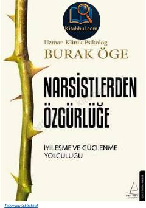

NÖNarsistik munosabatlardan xalos bo'lish va ruhiy tiklanish bo'yicha amaliy qo'llanma.
Ushbu kitob narsistik munosabatlar qurboni bo'lgan insonlarga o'zini tiklash va sog'lom hayotga qaytish yo'llarini o'rgatadi. Muallif klinik psixolog sifatida narsizmning ta'siri, depressiya va xavotir kabi muammolar bilan kurashish bo'yicha amaliy tavsiyalar beradi.